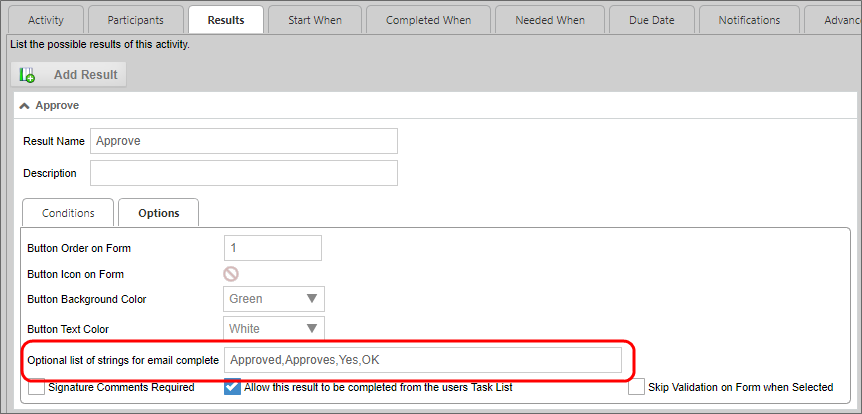
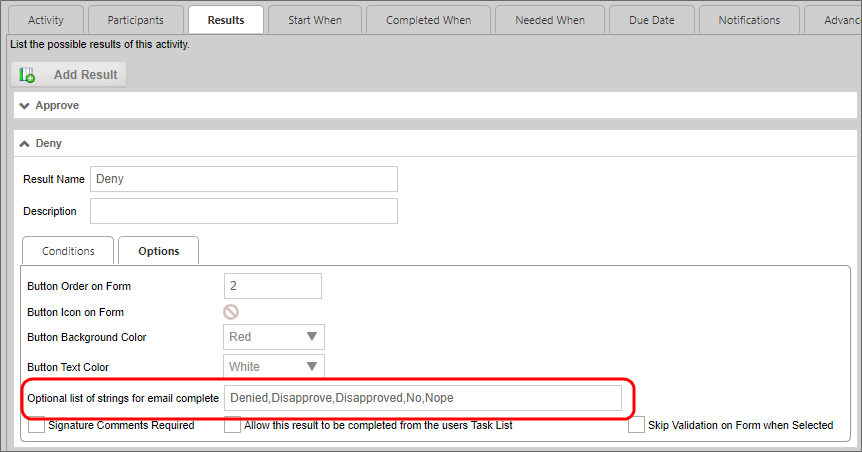
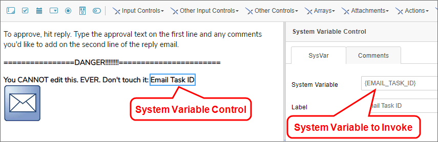
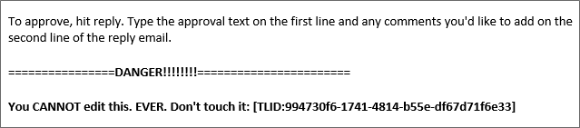
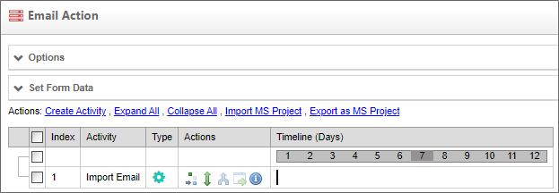
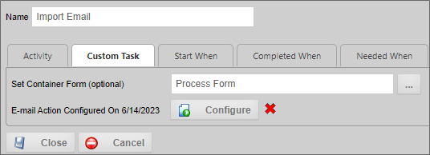
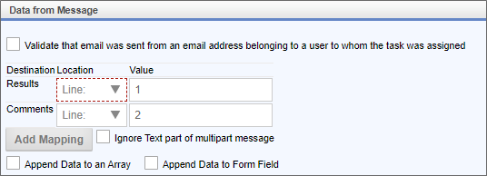
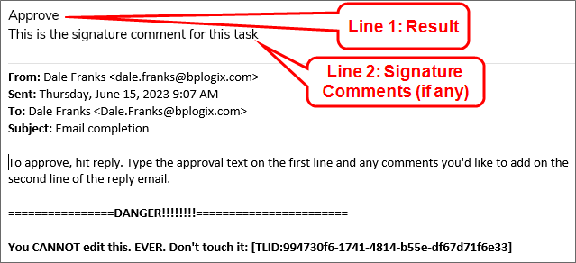
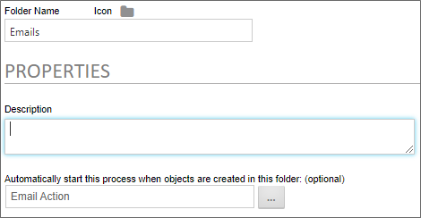

There are several ways to control task completion via email, each of which prompts different responses in Process Director.
There are three types of email links that can be inserted into the email template for completion of a task, each of which direct users to a completion form in Process Director, and not to the original Form:
All of the completion links do essentially the same thing, that is, they direct the user to a task completion page, bypassing the original Form. They each have a slightly different implementation on the email template, however.
The Email Result Links provide the user with a list of all of the possible results for a task, while the Email Completion Link provides a result link for a single possible result. So, if you want the user to see all of the possible task results, you'd use the Email Result Links, while if you only want to show a result for one or two possible results, you'd configure an Email Completion Link for each of the results you desire to show the user.
As an example, let's say that you have three possible results for a Process Timeline Activity: Approve, Reject, and Resubmit. For some users, you might want to show the Email Result Links to display all of the possible results:
{EMAIL_RESULT_LINKS, comments=1, confirm=1, separator=" | ", icon=1}
In this example, the Email Result Links control tag is configured to require comments (comments=1), require a confirmation dialog for the result (confirm=1), insert a spaced bar character between each result (separator=" | "), and display the icons for each result that was configured in the Process Timeline Activity (icon=1).
For another user, you might only wish to show the Approve or Resubmit results but not the Reject result:
{EmailCompleteLink, text=Approve the Request, comments=false, confirm=true, action=Approve}
{EmailCompleteLink, text=Ask for Resubmission, comments=true, confirm=true, action=Resubmit}
In this example, the Email Complete Links are configured to specify the text to display for the result (text=Approve the Request), require comments for the Resubmit result (comments=true), require a confirmation dialog for the results (confirm=true), and specifies the activity result you've configured on the Results tab of the Timeline Activity (action=Resubmit).
The Email Complete URL control tag, at its simplest, provides a link to the task completion page.
{EMAIL_COMPLETE_URL}
In this example, the user is provided with a link to the completion page, but, since it has no indication of what the result should be, the completion page will present the user with a dropdown control that displays all of the possible results.
It is possible, however, to fully configure the Email Complete URL control tag, so that it acts just like an Email Complete Link control:
{EMAIL_COMPLETE_URL, action=Approve, comments=1, confirm=1}
Using any of the three completion links work best if the process participant doesn’t need to edit any information on the Form, and the only action is to provide a result. If you do wish the user to go to the Form to edit or add information, then you can't use the result links.
Allowing a task to be completed from email is called offline completion. Offline completion enables processes to parse an email message, and, based on the contents of the email, complete a task. Offline email completion requires several specific configuration elements:
We'll discuss each of these methods in more detail below.
For offline completion of an Activity to work, the Process Timeline Activity must be properly configured. First, in the Advanced Options tab of the Process Timeline Activity, you must select the Allow task to be completed from email property.

When this property is checked, Process Director will search an imported email message for the task for which the result must be set, and the text of the configured result. By default, Process Director will search for the text configured on the Results tab as the Result Name for all of the configured results. You can also add additional strings to search for to meet the result by using the Optional list of strings for email complete property to enter a text string or comma-separated list of strings that, if found, will also constitute a valid result.

In the example shown above, in addition to the "Approve" result, the result is also configured to accept "Approved", "Approves", "Yes", or "OK" as a valid "Approve" result for the Activity. Any email that contains these optional text strings instead of "Approve" will still complete properly, and the result "Approve" will be applied to the activity.
You must repeat this configuration for all of the results of the Timeline activity. For example, the "Deny" result in this example is configured as:

In order for Process Director to correctly associate the email message with the task that needs to be completed, the email notification must use the Email Task ID System Variable ({EMAIL_TASK_ID}) somewhere in the body of the email notification.

In this example, a System Variable control has been placed on the notification message template to invoke the Email Task ID system variable at run time, and place the GUID identifier for the task as text in the email message.

The value placed in the email by this system variable should never be edited, or the parsing and completion process will fail, so it's important that end users, when replying to the email notification, do not edit this value.
Finally, the Email Data control that you place on the email notification template must use, as the Reply To address, the email inbox that will be used to store email responses until they're imported into Process Director. When the user replies to the notification email, the message will be routed to this email inbox, where it will wait until imported.
You'll need to create a Process Timeline that has a single Custom Task activity that invokes the Email Action Custom Task. In this example, the Process Timeline has been named Email Action, which you'll need later when configuring the import folder.

This is the Process Timeline that will import the email, parse it for the Task ID and completion text string, then apply the parsed result to the specified user task/activity.
The Email Action Custom Task must be configured with the following settings.
First, the Set Container Form property for the Custom Task must be configured with the main process Form for the Timeline activity you wish to complete, which, in this example, is named Process Form.

Once set, you can then configure the Custom Task, primarily its Data From Message section, which specifies how to parse the email response.

In this example, the Custom Task is configured to look for the result text in the first line of the email message, and any signature comments in the second line of the message, e.g.:

This is probably the easiest method to use for parsing the imported email message.
While this basic configuration is sufficient, you may wish to also configure whether to include the parsed email as a process attachment, or configure simple notifications for success or failure of the email import, to let the user know the result of the import. Please see the Email Action Custom task documentation for more details on configuring this Custom Task.
When properly configured, the Custom Task will parse the email messages in a specified email inbox for the appropriate result, and send an email to the user for unparsable or ambiguous emails, to prompt the user to resend the completion email.
Email messages must be imported from the specified email inbox into a Process Director Content List folder for processing. This folder, named Emails in the example below, must be configured with the Automatically start this process when objects are created in this folder property set to invoke the import process you configured previously.

In this example, the Email Action process Timeline that we configured in Step 3 will be invoked every time an email message is imported (or uploaded) to the Emails folder.
Offline completion generally uses the bpImportEmail utility to retrieve emails from the email inbox on a scheduled basis, and import them into the specified folder for automatic parsing. You should know, however, that you can also manually upload email messages into the folder as well, if needed. Irrespective of how the email message is placed in the folder, the Email Action Process Timeline will run for each email message when it's placed there.
Keep in mind that scheduling the email import imposes some delay on the processing of the email message, since the email message will be stored in the Reply To inbox until the next scheduled run of the bpEmailImport utility. For example, if you run bpEmailImport every 8 hours, there will be a delay of up to 8 hours before the email message is imported into the folder and parsed.